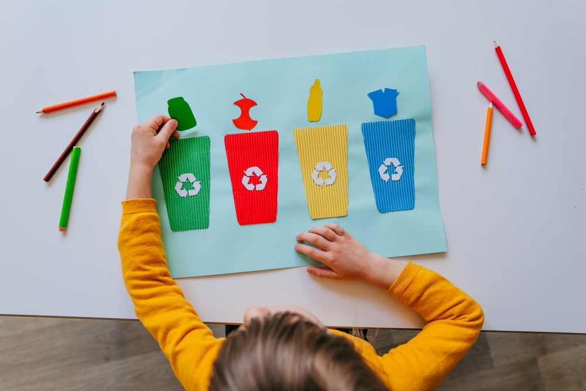
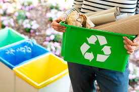
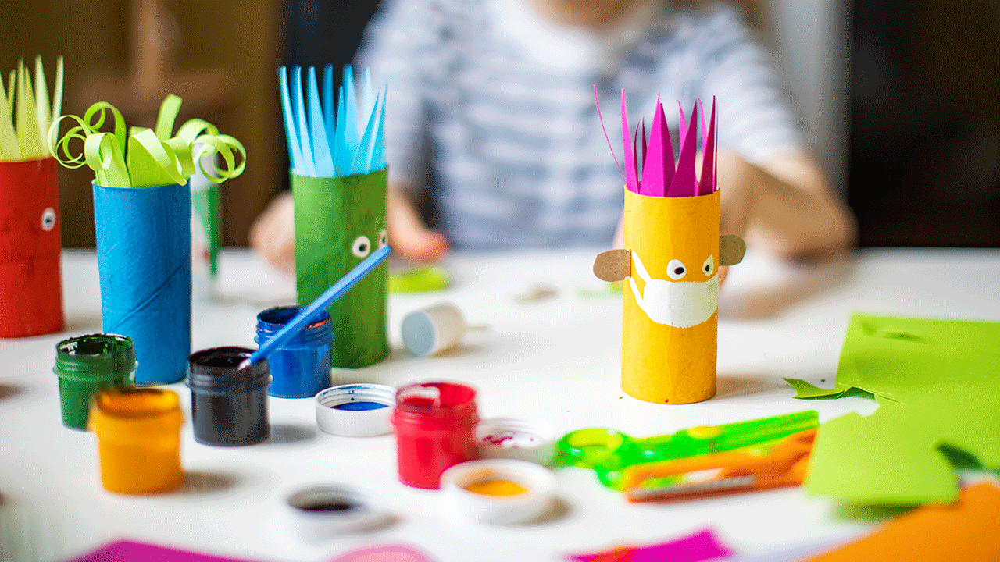
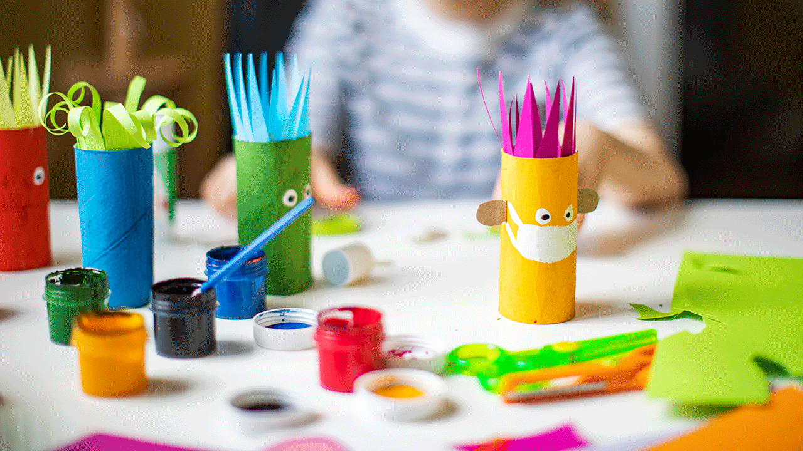
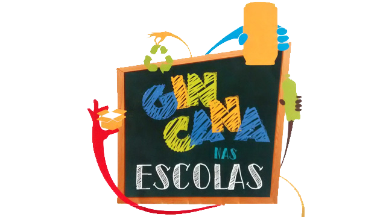

Como as escolas poderiam ajudar?
As escolas sempre tiveram um papel importante na educação, compartilhando ideias, apresentando o conceito de reciclagem e incentivando ações favoráveis ao meio ambiente. Então existem atitudes que as escolas podem realizar que melhoram essa área tanto em relação ao ambiente escolar quanto ao meio ambiente.
Algumas das ações que podem ser tomadas são:
Aula de educação ambiental:
Muitas escolas já contam com lixeiras coloridas para a separação do lixo. Porém, é sempre mais motivador respeitar essa orientação quando se compreende as suas razões. Por isso, é importante que os estudantes aprendam que a instituição precisa da ajuda de todos para separar os materiais e enviá-los para a reciclagem.
Aula de educação ambiental:
Muitas escolas já contam com lixeiras coloridas para a separação do lixo. Porém, é sempre mais motivador respeitar essa orientação quando se compreende as suas razões. Por isso, é importante que os estudantes aprendam que a instituição precisa da ajuda de todos para separar os materiais e enviá-los para a reciclagem.
Adoção de medidas sustentáveis em sala de aula
O exemplo é um ótimo recurso para a aprendizagem. A introdução de medidas sustentáveis em sala de aula contribui para que os estudantes aprendam novos hábitos e se tornem mais conscientes da importância de dar atenção às suas ações no dia a dia.
O exemplo é um ótimo recurso para a aprendizagem. A introdução de medidas sustentáveis em sala de aula contribui para que os estudantes aprendam novos hábitos e se tornem mais conscientes da importância de dar atenção às suas ações no dia a dia.
Jogos feitos de materiais recicláveis
Os jogos podem ser grandes aliados da aprendizagem e o benefício pode ser ainda maior se os estudantes participarem da confecção do brinquedo educativo.
Os jogos podem ser grandes aliados da aprendizagem e o benefício pode ser ainda maior se os estudantes participarem da confecção do brinquedo educativo.
Projeto ou gincana de reciclagem na escola
A escola também pode propor projetos ou gincanas de reciclagem. É possível envolver diferentes turmas e séries, fazendo separação por classe ou até por equipes. A ideia, em essência, é incentivar o recolhimento de materiais recicláveis, dando prêmios àqueles que juntarem um volume maior desses materiais.
A escola também pode propor projetos ou gincanas de reciclagem. É possível envolver diferentes turmas e séries, fazendo separação por classe ou até por equipes. A ideia, em essência, é incentivar o recolhimento de materiais recicláveis, dando prêmios àqueles que juntarem um volume maior desses materiais.